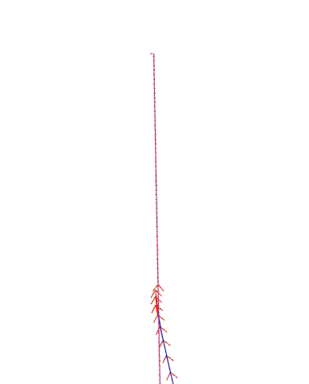
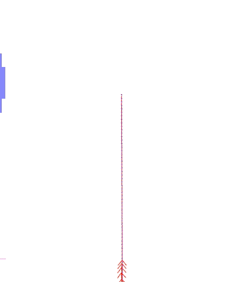
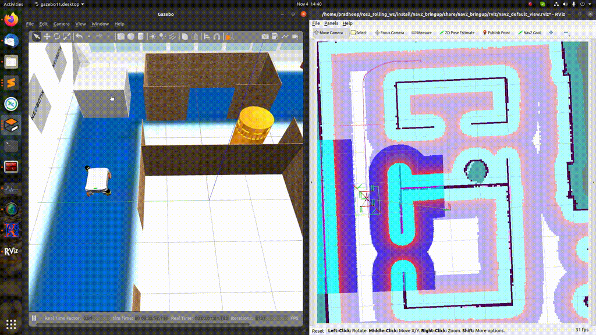
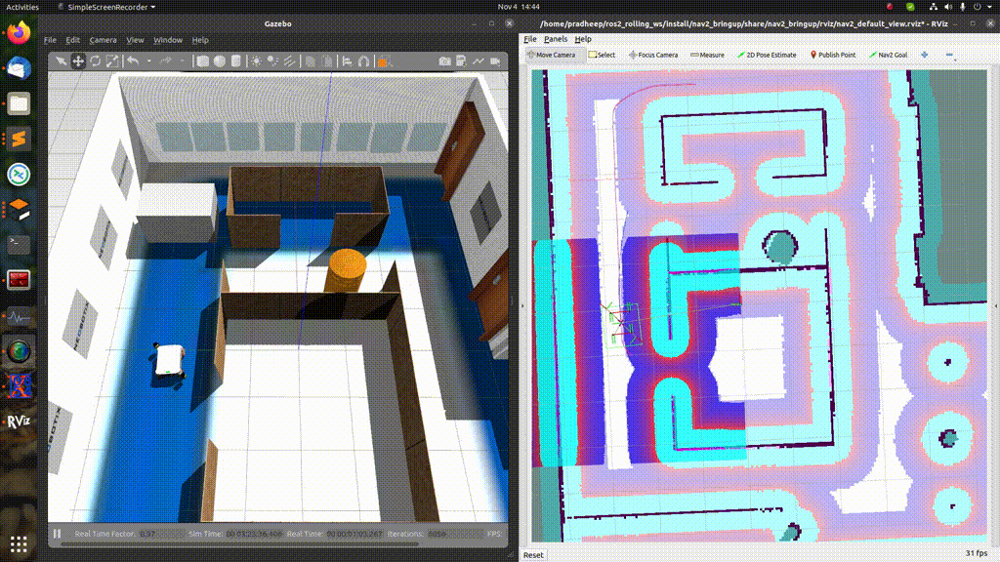

Galactic转换为Humble
从 ROS 2 Galactic 到 Humble，我们添加了一些稳定性改进，我们将不在此处具体介绍。
对Smac规划器进行了重大改进
Smac Planner在2D和Hybrid-A*实现方面得到了显著改进，使路径更好、更快、更高质量。
碰撞检查器更快地拒绝碰撞并更少地查询代价地图的坐标
零拷贝碰撞检测对象
预先计算碰撞检查足迹的方向，运行时不需要三角函数计算
只有在机器人位于可能被内接区域时才检查完整的SE2足迹
计算可能的内切区域，或者某些足迹部分可能与边界发生碰撞以检查完整的足迹。否则，检查中心成本，因为承诺不处于潜在的碰撞状态
将Hybrid-A*规划器重命名为SmacPlannerHybrid
离线预先计算Reedshepp和Dubin路径，使得在运行时只需查找表
用名为障碍启发式的新启发式替换了波前启发式。该启发式使用差分A*搜索计算Dijkstra路径，考虑了8个连接空间，并在位置的成本上引入权重以指导启发式进入走廊中心。它还对代价图进行降采样，可以将扩展次数减少75%，并且在启发式中引入的误差非常小，最多仅为单个单元距离的部分分数。
改进分析扩展算法，以消除路径末尾可能存在的循环，尽可能地消除
改进分析性扩展以提供最大路径长度，以防止靠近障碍物
改进2D A*的行进成本和启发式算法，以加快规划时间并显著提高路径质量
用定制的梯度下降实现替换了平滑器
将规划器的常用工具抽象为一个工具文件
优化的成本函数
使用动态规划预先计算障碍启发式算法，只扩展最小数量的节点
一个缓存启发式设置，当目标保持不变时，使用缓存的障碍启发式值来实现25Hz的规划速率
利用Dubin和Reeds-Sheep空间中的对称性，将缓存大小减少50%，增加可用于启发式查找的窗口大小
在所有方向分箱中预计算基本元素
SmacPlanner2D参数现在全部可重新配置
混合A*和状态格子规划器现在都是完全可接受的
混合A*和状态网格路径平滑化的参数化已重新添加
平滑器现在启用了运动学可行的边界条件
状态网格支持原地旋转原始类型
回顾性惩罚添加到加速规划器，使其优先考虑后续搜索分支，而不是先前的分支，在绝大多数情况下这些分支几乎没有改善路径的机会
- 这些改进的要点是：
规划速度比以前快2-3倍，在几乎所有情况下都在200毫秒以下，使其与NavFn和全局规划器一样快（但现在是运动学可行的）。典型的规划时间在不使用缓存或降采样功能的情况下都在100毫秒以下。
通过改进的平滑器和一种新颖的启发式算法，路径质量显著提高，使机器人在可能的情况下朝向通道中心。这样可以生成更平滑、尽可能远离障碍物的路径。
使用缓存或降采样参数化，几乎可以在任何大小的空间中实现低于50毫秒的路径规划。
平滑器现在可以进行更多的细化操作，即使在倒车时也可以创建运动学上可行的边界条件。
还进行了其他改进，包括``analytic_expansion_max_length``参数的引入，限制了解析扩展的潜在长度。如果长度太长，则拒绝此扩展。这样可以防止将路径不安全地捷径到离目标远的高成本区域，让搜索工作在解析扩展接近目标之前完成。此参数的值不应小于使用的最小转弯半径的4-5倍，否则规划时间将开始急剧增加。
此外，遍历成本和启发式成本计算已经更新**，如果您之前有现有配置，则需要重新调整惩罚函数**。算法的默认设置也相应调整以适应这一变化，以实现类似以前的开箱即用行为（作为参考使用）。
简单（Python）指令器
This PR 2411 <https://github.com/ros-planning/navigation2/pull/2411>`_引入了一个新的包到Nav2，称为``nav2_simple_commander`。它是一个在对象中的一组函数，BasicNavigator，可以用于在Python3中构建使用Nav2驱动的自主任务，而不必关心Nav2、ROS 2或Action服务器的详细信息。它包含一个简单的API，接受常见的类型（主要是``PoseStamped``），并处理所有在幕后的实现细节。例如，这是一个使用这个API的简单导航任务：
def main():
rclpy.init()
navigator = BasicNavigator()
# Set our demo's initial pose
initial_pose = PoseStamped()
... populate pose ...
navigator.setInitialPose(initial_pose)
# Wait for navigation to fully activate
navigator.waitUntilNav2Active()
# Go to our demos first goal pose
goal_pose = PoseStamped()
... populate pose ...
navigator.goToPose(goal_pose)
while not navigator.isTaskComplete():
feedback = navigator.getFeedback()
... do something with feedback ...
# Basic navigation timeout
if Duration.from_msg(feedback.navigation_time) > Duration(seconds=600.0):
navigator.cancelNav()
result = navigator.getResult()
if result == TaskResult.SUCCEEDED:
print('Goal succeeded!')
elif result == TaskResult.CANCELED:
print('Goal was canceled!')
elif result == TaskResult.FAILED:
print('Goal failed!')
完整的API可以在软件包的README中找到：<https://github.com/ros-planning/navigation2/tree/main/nav2_simple_commander>。还可以在软件包的源代码中找到一些有详细注释的示例和演示：<https://github.com/ros-planning/navigation2>。
减少节点和执行器
为了使nav2充分利用ROS 2，我们需要尽量减少nav2中的节点和执行器数量，以提高性能。
这个功能在`票号816 <https://github.com/ros-planning/navigation2/issues/816>`_中讨论过，并在
在``WaypointFollower``类中删除``client_node_``：PR2441
删除``class MapSaver``中的``rclcpp_node_``：PR2454
在``LifecycleManager``类中删除``bond_client_node_``：PR2456
删除``class LifecycleManagerClient``中的``node_``：PR2469
在``class ControllerServer``中移除``rclcpp_node_``：PR2459，PR2479
在``class AmclNode``中移除``rclcpp_node_``：PR2483
删除``class Costmap2DROS``中的``rclcpp_node_``和``client_node_``：PR2489
在``class LifecycleNode``中移除``rclcpp_node_``：PR2993
- 这些PR中有一些API发生了变化：
PR2489 <https://github.com/ros-planning/navigation2/pull/2489>`_在``nav2_costmap_2d::Layer``类的初始化函数中移除了参数``client_node`、
rclcpp_node``并添加了参数``callback_group。callback_group``用于替代``rclcpp_node。PR2993 在
nav2_util::LifecycleNode类的构造函数中删除了参数use_rclcpp_node。
扩展BtServiceNode以处理服务结果
PR2481 和 PR2992 处理了 该问题 和 这个问题，并为 BtServiceNode 类添加了一个虚拟的 on_completion() 函数（可以在这里找到）。类似于已有的虚拟 on_wait_for_result() 函数，它可以在子类中进行重写，以对相应的事件做出用户定义的操作。添加的 on_completion() 函数将在 BtServiceNode 的服务交互成功完成后调用。
/**
* @brief Function to perform some user-defined operation upon successful
* completion of the service. Could put a value on the blackboard.
* @param response can be used to get the result of the service call in the BT Node.
* @return BT::NodeStatus Returns SUCCESS by default, user may override to return another value
*/
virtual BT::NodeStatus on_completion(std::shared_ptr<typename ServiceT::Response>/*response*/)
{
return BT::NodeStatus::SUCCESS;
}
返回的``BT::NodeStatus``将设置BT节点的当前状态。由于函数可以访问服务的结果，因此返回的节点状态可以依赖于这些服务结果。引入``on_completion()``函数不会影响``BtServiceNode``的正常行为，因为默认实现仍然在服务交互成功完成时简单地返回``BT::NodeStatus::SUCCESS``。
包括新的旋转Shim控制器插件
这个 PR 2718 <https://github.com/ros-planning/navigation2/pull/2718> 引入了新的 nav2_rotation_shim_controller。这个控制器将检查机器人与新接收到的路径之间的大致航向差异。如果在阈值范围内，它将将请求传递给主要控制器来执行。如果超出阈值范围，这个控制器将使机器人朝向该路径的航向旋转。一旦在容差范围内，它将把控制执行从这个旋转控制器转交给主要控制器插件。此时，机器人仍然会旋转，以便当前插件可以控制平稳过渡到路径跟踪。
旋转Shim控制器适用于以下情况：
能够原地旋转的机器人，如差分驱动和全向驱动机器人。
在开始跟踪一个与机器人当前方向明显不同的新路径时，更喜欢原地旋转而不是“螺旋外扩”。
使用不可行的规划器（如 NavFn、Theta* 或 Smac 2D）（可行的规划器如 Smac Hybrid-A* 和 State Lattice 将从机器人的实际起始航向开始搜索，无需旋转）。
在Gazebo中生成机器人
这个 PR 2473 <https://github.com/ros-planning/navigation2/pull/2473> 删除了 nav2_bringup 目录中的 pkg nav2_gazebo_spawner。推荐使用 gazebo_ros 的节点 spawn_entity.py <https://github.com/ros-simulation/gazebo_ros_pkgs/blob/ros2/gazebo_ros/scripts/spawn_entity.py> 在 gazebo 中生成机器人。注意
要正确工作，必须同时启动``libgazebo_ros_init.so``和``libgazebo_ros_factory.so``的Gazebo。
spawn_entity 节点尚不能在启动文件中将 /tf 和 /tf_static 重新映射为 tf 和 tf_static，仅用于多机器人情况。通过在每个在 SDF 文件中发布变换的插件下添加重映射参数 <remapping>/tf:=tf</remapping> <remapping>/tf_static:=tf_static</remapping> 在 ros2 标签下，克服了这个问题。区分不同机器人的 tf 是必不可少的。
恢复行为超时
Nav2 中的恢复（spin 和 backup）现在在它们的行为树节点和动作中具有 time_allowance 端口和请求字段，用于指定超时时间。这有助于确保机器人在备份或旋转原语行为中能够在一段合理的时间内退出，以防止被卡住或无法在合理的时间内完全备份。
3个2D规划器的新参数``use_final_approach_orientation``
Pull request 2488 <https://github.com/ros-planning/navigation2/pull/2488> 向 3 个 2D 规划器（Theta*、SmacPlanner2D 和 NavFn）添加了一个新参数 use_final_approach_orientation，默认为 false。如果为 true，则规划器生成的路径的最后姿态将其方向设置为接近方向，即连接路径最后两个点的向量的方向。这允许将
 {kind=link}
{kind=link}
SmacPlanner2D和Theta*：修复目标方向被忽略的问题
这个拉取请求 2488 修复了忽略目标姿态方向的问题（结束路径姿态方向总是设置为0）。
更改和修复动态参数更改检测的行为
这个 和 这个PR 修改了捕捉动态参数更改的方法。动机是修复这样一个问题，即对于每个节点的每个参数更改，都会调用 void on_parameter_event_callback(const rcl_interfaces::msg::ParameterEvent::SharedPtr event)，从而导致如果两个不同的节点具有相同的参数名，就会产生不必要的参数更改。
动态参数
新增的动态参数：
`This PR 2592 <https://github.com/ros-planning/navigation2/pull/2592>`_使大部分Costmap2DROS参数变为动态参数
这个PR 2607 使大多数受控纯追踪参数变为动态参数。
`This PR 2665 <https://github.com/ros-planning/navigation2/pull/2665>`_使大部分Theta * Planner参数变为动态参数
这个PR 2704 使 Waypoint Follower、Planner Server 和 Controller Server 的参数可重新配置。
BT Action节点异常变更
当行为树动作节点由于网络或行为服务器故障引发异常时，现在它们会返回 FAILURE 状态码，以使行为树中的特定动作失败。与之前不同的是，网络引发的异常被发送到根行为树，这将导致任务级别的失败，行为树无法对其进行响应。
在 RPP 中移除了运动限制
控制器中的参数``max_linear_accel``和``max_linear_decel``以及限制运动学的部分已被移除，导致不稳定。如果您想要类似的行为，请使用ROS生态系统中提供的速度平滑器。
添加了更平滑的任务服务器
添加了一个新的任务服务器，它加载更平滑的插件并执行它们，以改进现有的计划路径的质量。平滑动作可以通过使用SmoothPath行为节点在行为树中调用。PR 2569 实现了这一功能，PR 2875 添加了第一个使用简单平滑器的插件。其他平滑器正在开发中，并将在将来添加。
在 RPP 中移除了使用接近速度缩放参数
参数``use_approach_linear_velocity_scaling``已被移除，始终处于打开状态，以帮助实现平滑过渡到目标。这个 PR 2701 实现了这一功能。
将 AMCL 运动模型重构为插件
这个 PR 2642 创建了当前在 AMCL 中使用的不同运动模型的插件。这个功能使用户可以通过创建插件并将 robot_model_type 参数更改为 nav2_params.yaml 文件中插件的名称来使用任何自定义运动模型。这有助于在不修改 AMCL 源代码的情况下使用自定义运动模型。
仅在路径无效时重新规划
这个 PR 2591 创建了两个新的条件行为树节点，以便仅在路径变为无效时进行重新规划，而不是不断地重新规划。这些新节点已集成到默认的行为树中。
修复 CostmapLayer 清除区域的反转参数逻辑
这个 PR 2772 修复了 CostmapLayer clearArea 函数的反向参数逻辑。从而修正了 clearAroundRobot 和 clearExceptRegion 服务及其相应的行为树动作的行为。
动态组合
这个PR 2750 为用户提供了基于ROS2动态组合的可选引导。它可以用于将所有Nav2节点组合在一个单独的进程中，而不是分别启动这些节点，这对于需要根据严格的资源限制进行优化的嵌入式系统用户非常有用。它默认情况下启用，但可以通过使用启动参数``use_composition:=False``来禁用。
一些实验展示了动态组合的性能改进，CPU 和内存由 psutil 捕获：
CPU：Intel(R) i7-8700 (6核12线程)，内存：32GB
CPU(%)
内存（%）
正常的多进程
44
0.76
动态组合（使用``component_container_isolated``）
38
0.23
动态组合的方式消耗的内存较低（节约约70%），CPU使用较低（节约约13%）比普通的多进程。
BT取消节点
这个`PR 2787 <https://github.com/ros-planning/navigation2/pull/2787>`_ 为Nav2堆栈中的不同服务器（如controller_server、recovery_server等）提供了一个抽象节点，用于开发取消行为。作为起点，这个PR还提供了``CancelControl``行为，用于取消给controller_server的目标。作为对``CancelControl``的补充，PR 2856 为用户提供了取消恢复行为（如``backup``、spin``和``wait）的选项。
BT PathLongerOnApproach 节点
在`PR <https://github.com/ros-planning/navigation2/pull/2802>`_ 中，添加了一个名为``PathLongerOnApproach``的新的装饰器BT节点，用于检查和处理由于给定目标附近的障碍物而生成的较长路径。为了演示这个功能，一个新的BT navigate_to_pose_w_replanning_goal_patience_and_recovery.xml 将作为一个示例和一个可立即使用的BT，用于针对希望优化其过程周期时间的特定应用程序。下面可以看到开发的BT的演示，当机器人接近目标时会暂停，以查看动态障碍物是否移开。否则，它会执行重新规划：
障碍物完全没有清除，'obstacle_clearance_time' 设置为 3 秒：
障碍物消失，你可以看到机器人通过了（理想情况下应该是）相同的路径：
BT TruncatePathLocal 节点
在`PR 2753 <https://github.com/ros-planning/navigation2/pull/2753>`_ 中，添加了一个名为``TruncatePathLocal``的新的动作BT节点，用于提取靠近机器人的有界长度路径段，用于碰撞检测或计算密集型平滑器等用途。
约束平滑器
在`PR 2753 <https://github.com/ros-planning/navigation2/pull/2753>`_ 中，添加了一个名为``nav2_constrained_smoother::ConstrainedSmoother``的新的平滑器，用于优化各种路径标准，如平滑性或与障碍物的距离，并保持最小转弯半径。
以恒定速率重新规划路径，如果路径无效则重新规划
「这个 PR 2804 <https://github.com/ros-planning/navigation2/pull/2841>」引入了一个新的行为树，用于在目标位姿中进行一致的重新规划和路径失效处理。为了支持这个新的行为树，引入了一个新的条件节点 PathExpiringTimer，以便以一致的频率触发重新规划。
二维欧几里得距离
「这个 PR 2865 <https://github.com/ros-planning/navigation2/pull/2865>」修改了 nav2 中的欧几里德距离计算，将其投影到 XY 平面上（即丢弃与 Z 分量相关的任何信息）。如果在 Nav2 生态系统之外使用自定义插件，则这可能会在某种程度上改变某些行为树节点、行为树导航器、控制器服务器、规划器服务器和 RPP 的行为。
恢复至行为
「这个 PR 2867 <https://github.com/ros-planning/navigation.ros.org/pull/298>」将 nav2_recoveries 重命名为 nav2_behaviors。
在navigation_launch.py中，recoveries_server -> behavior_server以及nav2_recoveries -> nav2_behaviors。在nav2_params.yaml中，recovery_plugins -> behavior_plugins以及nav2_recoveries -> nav2_behaviors。
启动和生命周期管理中的重新生成支持
`PR 2752 <https://github.com/ros-planning/navigation2/pull/2910>`_使Nav2支持重启。在启动文件中，您可以将``use_respawn``设置为``true``以启用服务器崩溃后的重启。这仅适用于非组合系统，因为在组合系统中，所有节点都在单个进程下运行，任何地方的崩溃都会导致整个系统崩溃（包括生命周期管理器本身）。即使容器设置为重启，它也只会重启空容器，而不会加载其中的所有组件。
该 PR 还使生命周期管理器能够检查系统是否因崩溃而停机。如果是这样，管理器将检查服务器是否在给定的超时期内重新上线。如果是，它将自动重新将系统转换为活动状态，以继续执行其任务。
目标检查器API已更改
「PR 2965 <https://github.com/ros-planning/navigation2/pull/2965>」在 nav2_core::GoalChecker 类的初始化函数中添加了一个额外的参数，即 costmap_ros 指针。这用于检查目标是否与碰撞，以便我们可以避免朝目标移动并使用某个 BT 插件触发重新规划。
新增辅助遥操作
PR 2904 <https://github.com/ros-planning/navigation2/pull/2904> 中新增了一个辅助远程操作的新行为，同时还添加了两个新的行为树节点 AssistedTeleop 和 CancelAssistedTeleop。